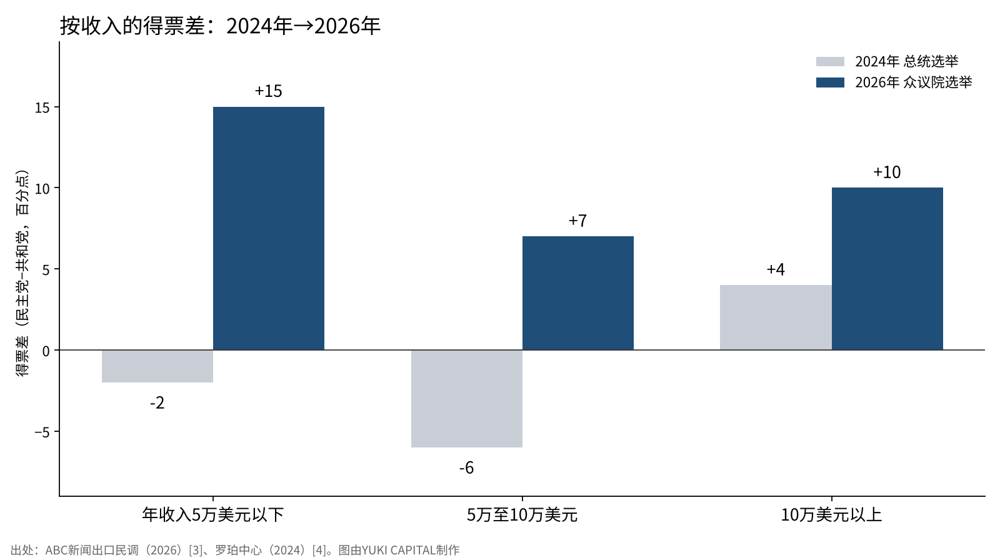
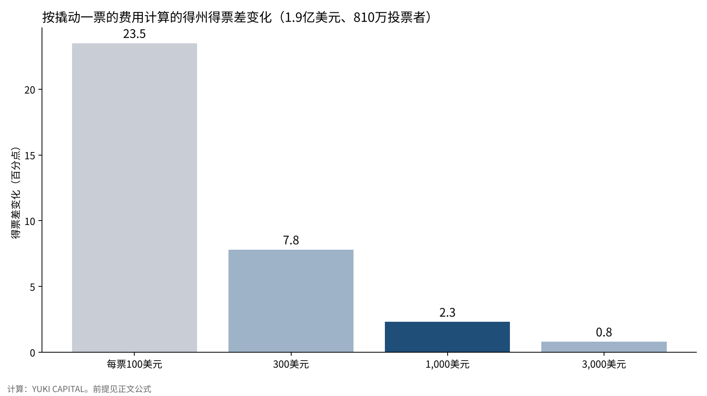

马斯克的4.74亿美元，能撬动多少选票——从捐款、按收入划分的投票和历次中期选举来检验
在2026年11月3日的美国中期选举中，民主党夺回了参众两院的多数[7]。据报道，这次选举中花钱最多的个人是埃隆·马斯克。总额约4.74亿美元，仅得克萨斯州参议院选举一项就估计达到约1.9亿美元[6]。
根据向联邦选举委员会（FEC）提交的申报，可以确认他向共和党系政治团体“参议院领导力基金”捐款1.58亿美元[1]。就在得州，民主党的詹姆斯·塔拉里科击败了共和党的肯·帕克斯顿[11]。
本文只提一个问题：马斯克的钱，估计能撬动多少选票？我用三把尺子来检验：捐款的规模、按收入划分的投票，以及历次中期选举。

问题与背景
首先定义三个词。超级政治行动委员会（Super PAC）是以不与候选人协调为条件，可以无上限地向个人和企业募款并用于广告等活动的政治团体。中期选举是指总统选举两年后举行的国会选举。得票差是指与第二名候选人得票率之差，以百分点表示。
在美国，自2010年最高法院的判决以来，通过超级政治行动委员会的大额捐款已占选举资金的很大一部分。一位富豪拿出数亿美元的选举，正是典型。2026年的得州参议院选举，到10月中旬总支出已超过5亿美元，创下该州参议院选举的最高纪录[11]。与马斯克相关的约1.9亿美元，约占其中四成。
之所以把问题设为“撬动了多少选票”，是因为只看输赢，无法把金钱的效果与整场选举的大势区分开来。输的一方有大笔资金，并不意味着金钱没有效果。反过来，赢的一方花的钱，也未必是获胜的全部原因。金钱的效果，只能作为扣除整体大势后的剩余部分来估计。
数据与方法
使用的一手资料有六类：参议院领导力基金和美国政治行动委员会（America PAC）的FEC申报[1][2]，ABC新闻等参与的2026年全国出口民调（约7.8万人）[3]，康奈尔大学罗珀中心整理的2024年出口民调[4]，加州大学圣塔芭芭拉分校美国总统项目关于中期选举议席的统计[5]，以及两篇测量竞选效果的论文[8][9]。捐款总额和用途以报道补充[6]。
方法分为三步。第一步，把得州参议院选举中与马斯克相关的资金除以该州投票人数，得出人均金额。投票人数以上一次中期选举即2022年得州的实际数字约810万人为参考[10]。
第二步，设定“撬动一票所需的费用”这一前提，计算这笔钱撬动了多少选票。公式为：撬动的票数＝投入金额÷每票费用；得票差变化（百分点）＝撬动的票数÷投票人数×100。
第三步，把2024年总统选举和2026年众议院选举中按收入划分的投票并排比较，看哪个群体变动了多少。由于比较的是不同职位的选举，数字只作为趋势的参考。
2026年的出口民调把家庭年收入分为六档[3]。2024年的数字由大学研究机构整理当年的出口民调而成，年收入分为三档[4]。因此，比较只限于5万美元以下、5万至10万美元、10万美元以上三个区间。得票差以民主党得票率减去共和党一方的得票率表示。
结果：资金规模与按收入的变动
| 项目 | 数字 | 出处 |
|---|---|---|
| 马斯克在整场选举中的支出（报道） | 约4.74亿美元 | 报道[6] |
| 向参议院领导力基金的捐款（9月两次） | 7,500万美元＋8,300万美元＝1.58亿美元 | FEC[1] |
| 与马斯克相关的得州参议院选举支出（估计） | 约1.9亿美元 | 报道[6] |
| 得州参议院选举总支出（10月中旬） | 超过5亿美元 | 报道[11] |
| 得州每位投票者 | 约23美元（1.9亿美元÷810万人） | 计算 |
| 中期选举中总统所在党失去的众议院议席（1934至2018年平均） | 28席 | 总统项目[5] |
| 同口径的参议院议席 | 4席 | 总统项目[5] |
计算下来，得州每位投票者身上花了约23美元。电视和视频广告会多次触达同一个人，按每人接触次数来看，压力应该更大。
从整场选举看，用4.74亿美元除以2022年众议院选举约1.07亿投票者，每人约4.4美元[12]。这笔钱并非在全国薄薄铺开，而是集中在得州等少数州。仅得州一州的人均金额，就超过全国平均的5倍。
按收入划分的投票，呈现为下图的形态。在2024年总统选举中，年收入5万美元以下的群体特朗普领先2个百分点，5万至10万美元的群体也领先6个百分点[4]。在2026年众议院选举中，5万美元以下群体民主党领先15个百分点，5万至10万美元群体也领先7个百分点[3]。

收入越低的群体，变动幅度越大。按计算，5万美元以下群体向民主党一侧移动了17个百分点，5万至10万美元群体13个百分点，10万美元以上群体6个百分点。年收入30万美元以上的群体，民主党领先21个百分点[3]。
年收入5万美元以下的群体占投票者的27%[3]。把这一群体17个百分点的变动换算成整体得票差，约为4.6个百分点。这是把全国与一个州并列的粗略比较，但已接近后文金钱效果估计值（每票1,000美元时2.3个百分点）的两倍。
敏感性分析：改变一票的价格
把撬动一票的费用设为100美元、300美元、1,000美元和3,000美元四种情况进行计算。费用越低，同样的钱能撬动的票越多。
| 撬动一票的费用 | 撬动的票数（以1.9亿美元计） | 得票差变化 |
|---|---|---|
| 100美元 | 190万票 | 23.5个百分点 |
| 300美元 | 63万票 | 7.8个百分点 |
| 1,000美元 | 19万票 | 2.3个百分点 |
| 3,000美元 | 6.3万票 | 0.8个百分点 |

如果每票100美元，就能把得州的得票差撬动20个百分点以上。现实中并没有出现那么大的差距，因此自然应认为这一前提过于乐观。
测量竞选效果的研究，反而支持1,000美元以上这一侧。汇总49项实验的研究估计，大选中上门拜访和邮件劝说的效果平均几乎为零[8]。比较同一候选人两次参选的研究，也得出支出效果很小的结论[9]。不过，前一项研究也报告了在选举早期和初选中可以看到劝说效果，并没有说效果为零[8]。
如果每票1,000美元，撬动的约为19万票，得票差2.3个百分点。在势均力敌的州足以决定胜负，但还不足以扭转整场选举的大势。
讨论
相反的看法有两种。第一种认为，如果没有这笔钱，共和党会输得更惨。按照这种看法，马斯克的钱缩小了失败的幅度，并非没有效果。本文的计算也保留了以每票1,000美元推回2个多百分点的可能性。
第二种认为，大额捐款本身起了反作用。富豪向选举砸下巨资的样子，在选民眼中可能就是“为富人服务的政治”。收入越低的群体越大幅地转向民主党，这一事实与这种看法并不矛盾。但物价和经济方面的不满也能解释同样的形态，因此不能断言捐款就是原因。
数据的局限也很明显。2024年和2026年的出口民调，选举类型和调查方法都不同[3][4]。年收入为本人申报，未回答者不在数字之内。得州投票人数采用的是2022年的实际数字，并非2026年的确定值[10]。马斯克支出的总额和明细是报道的估计，能在FEC申报中确认的只是一部分[1][2][6]。
与历次中期选举相比，总统所在党失去议席本身并不罕见。1934至2018年平均，众议院失去28席，参议院失去4席[5]。这次的结果也可以看作处在这一平均趋势之中。不过据报道，在参议院民主党有望从共和党手中夺得7个席位，超过平均的4席[13]。这意味着在资金最集中的参议院，共和党输得比平均更多。
我设定三条检验标准：各州确定的得票数公布时，得州的得票差是否小于全国大势；在FEC的年终申报中，马斯克支出的总额和明细能确认到什么程度；2026年出口民调的加权确定后，按收入的变动是否保持同样的形态。
结论
马斯克在得州的支出，达到每位投票者约23美元。以研究所示“每票1,000美元以上”为前提，估计能撬动的得票差在2个百分点左右。
按收入看，2024年到2026年间最大幅度转向民主党的，是年收入5万美元以下的群体。比起资金的规模，生活实感的变化更可能解释选票的变动。
总统所在党在中期选举中失利的趋势，从1934年以来的平均也能得到确认。这意味着4.74亿美元不足以阻止这一趋势。金钱能撬动的幅度有上限，而这个上限只在势均力敌的选举中才有意义，难道不是吗？
我是这样看的
我持有1,250股SpaceX和400股特斯拉。我认为马斯克的捐款，也是为把特斯拉卖到海外而借助的政治力量。选举动摇的，是作为政治支持者的马斯克，两家公司的事业并没有动摇。
在日本经营公司、每天公开总资产，我有时能切身感受到对富人的反感。在美国，这种反感似乎在投票中表现了出来。所以，我不会因政治的输赢改变两家公司的持股数。持有的理由，只在事业崩塌时才重新审视。
参考文献
- 联邦选举委员会（FEC）“Senate Leadership Fund（C00571703）申报”2026-10-15 https://www.fec.gov/data/committee/C00571703/
- 联邦选举委员会（FEC）“America PAC（C00879510）申报”2026-10-15 https://www.fec.gov/data/committee/C00879510/
- ABC News“Voter Polls for 2026 US House Election: Results & Analysis”2026-11-04 https://abcnews.com/Elections/polls-2026-us-house-election-results-analysis
- 康奈尔大学罗珀公众舆论研究中心“How Groups Voted in 2024” https://ropercenter.cornell.edu/how-groups-voted-2024
- 加州大学圣塔芭芭拉分校美国总统项目“The 2022 Midterm Elections: What the Historical Data Suggest” https://presidency.ucsb.edu/analyses/the-2022-midterm-elections-what-the-historical-data-suggest
- The Texas Tribune“Elon Musk is the donor behind Senate Republicans' massive rescue mission for Ken Paxton”2026-10-15 https://texastribune.org/2026/10/15/elon-musk-ken-paxton-donations-senate-gop-super-pac
- Yahoo Finance“Elon Musk's $474 million election bet”2026-11-04 https://finance.yahoo.com/markets/stocks/articles/elon-musks-474-million-election-195142581.html
- Joshua L. Kalla, David E. Broockman“The Minimal Persuasive Effects of Campaign Contact in General Elections: Evidence from 49 Field Experiments”American Political Science Review 112(1), 2018 https://doi.org/10.1017/S0003055417000363
- Steven D. Levitt“Using Repeat Challengers to Estimate the Effect of Campaign Spending on Election Outcomes in the U.S. House”Journal of Political Economy 102(4), 1994 https://doi.org/10.1086/261954
- 得克萨斯州州务卿“Turnout and Voter Registration Figures (1970-current)” https://www.sos.state.tx.us/elections/historical/70-92.shtml
- CBS News“James Talarico wins Texas 2026 Senate election, flipping seat for Democrats”2026-11-04 https://www.cbsnews.com/news/texas-2026-senate-james-talarico-ken-paxton/
- 联邦选举委员会（FEC）“Federal Elections 2022: Election Results for the U.S. President, the U.S. Senate and the U.S. House of Representatives”2023 https://www.fec.gov/introduction-campaign-finance/election-results-and-voting-information/
- TheStreet“Stock Market Today: Dow, S&P 500, Nasdaq updates Nov. 4, 2026”2026-11-04 https://www.thestreet.com/stock-market-today/stock-market-today-dow-jones-sp-500-nasdaq-updates-nov-04-2026
图表和题图由YUKI CAPITAL制作
每天的数字和判断，我都记录在X上。